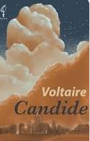
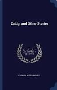
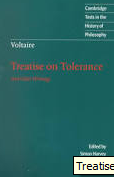
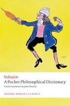
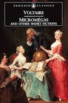
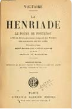

Creation
Frenc Enlightenment Writer
Voltaire merupakan salah satu dari dua tokoh filsuf pencerahan Perancis yang paling terkenal dan berpengaruh. Mereka menyebut dirinya sendiri filsuf pencerahan (enlightenment), tetapi mereka keduanya tidak memiliki kesabaran berurusan dengan metafisika dan epistemologi. Mereka membatasi perhatiannya pada masalah yang kurang abstrak dan lebih praktis, seperti politik dan pendidikan. Akibatnya, mereka mempunyai pengaruh yang besar terhadap zaman mereka yang serba kacau (Robert C. Solomon dan Kathleen M. Higgins, 2003).
Pemikiran Voltaire sendiri tentang sejarah, sejarah dipandang sebagai suatu proses yang membimbing manusia sampai kesempurnaannya, sehingga setiap epos kerja akan lebih sempurna dari yang dahulu. Maksud dan tujuan sejarah adalah untuk memperbaiki keadaan manusia berkat akal budi dan menjadikan manusia lebih kurang bodoh, melainkan lebih baik dan lebih bahagia. Ide ini kemudian diikuti dan dikembangkan oleh para filsuf generasi berikutnya sebagai faham optimistisme. Menurut faham ini untuk memperbaiki manusia melalui akal budinya saja. Menurut Voltaire: manusia adalah baik pada asalnya, haruslah saja diberikan kepadanya pendidikan dan pengetahuan yang cukup, lalu segala-gala akan beres dan dunia ini menjadi suatu tempat yang baik dan peperangan di antara Negara masing-masing tidak ada lagi (Rustam E. Tamburaka, 1999).
Some Of Creation From Voltaire
Candide adalah sebuah novel satir yang ditulis oleh filsuf Voltaire. Novel ini diterbitkan pertama kali pada 1759 di Jenewa, Swiss.Read more..

Diterjemahkan dari bahasa Inggris-Zadig ou la Destinée adalah novel dan karya fiksi filosofis oleh penulis Enlightenment Voltaire. Ini bercerita tentang Zadig, seorang filsuf di Babylonia kuno. Read more..

Treatise on Tolerance 1763
Diterjemahkan dari bahasa Inggris-Risalah tentang Toleransi pada Kesempatan Kematian Jean Calas dari Penghakiman yang Diberikan di Toulouse adalah karya filsuf Prancis Voltaire, yang diterbitkan pada 1763, di mana ia menyerukan toleransi antara agama, dan menargetkan fanatisme agama, khususnya para Jesuit , mendakwa semua takhayul di sekitar agama.

Dictionnaire Philosophique 1764
Dictionnaire philosophique adalah sebuah kamus ensiklopedik yang diterbitkan oleh Voltaire pada 1764. Artikel-artikelnya yang diurutkan berdasarkan abjad seringkali mengkritik Gereja Katolik Roma, Yudaisme, Islam dan lembaga lainnya.

Diterjemahkan dari bahasa Inggris-Micromégas adalah novel yang ditulis pada tahun 1752 oleh filsuf dan satirist Prancis, Voltaire. Bersamaan dengan kisahnya "Mimpi Plato", ini adalah contoh awal dalam genre sastra fiksi ilmiah, dan merupakan perkembangan yang signifikan dalam sejarah sastra.Read more..

Complete Works of Voltaire 1968
Diterjemahkan dari bahasa Inggris-Karya Lengkap Voltaire adalah edisi kritis pertama dari totalitas tulisan Voltaire yang disusun secara kronologis. Proyek ini dimulai oleh bibliografi dan penerjemah Theodore Besterman yang hanya hidup untuk melihat dua jilid pertama diterbitkan. Saat ini diterbitkan oleh Yayasan Voltaire di Universitas Oxford..

Diterjemahkan dari bahasa Inggris-L'Ingénu, diterjemahkan ke dalam bahasa Inggris di bawah berbagai judul termasuk The Huron, The Tulus Huron, Murid Alam dan Master Simple, adalah novel satir oleh penulis Prancis Voltaire, diterbitkan pada 1767.Read more..

Letters on the English 1733
Diterjemahkan dari bahasa Inggris-Letters on the English adalah serangkaian esai yang ditulis oleh Voltaire berdasarkan pengalamannya tinggal di Inggris antara 1726 dan 1729.

Diterjemahkan dari bahasa Inggris-La Henriade adalah puisi epik tahun 1723 yang ditulis oleh penulis dan filsuf Pencerahan Prancis Voltaire. Menurut Voltaire sendiri, puisi tersebut ditulis untuk menghormati kehidupan Henry IV dari Perancis, dan merupakan perayaan hidupnya.Read more..